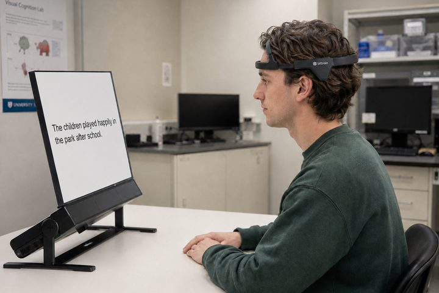

Psycholinguistics
Psycholinguistics asks how language is represented, understood, and produced in the mind. My interests span the field broadly, including comprehension, production, learning, memory, and the cognitive processes that make everyday language use possible.
